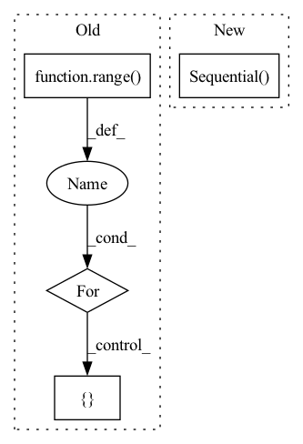

Pattern ID :1191

Before Change
in_channels = 3
out_channels = 64
for _ in range(num_conv_block):
block += [nn.ReflectionPad2d(1),
nn.Conv2d(in_channels, out_channels, 3),
nn.LeakyReLU(),
nn.BatchNorm2d(out_channels)]
in_channels = out_channels
block += [nn.ReflectionPad2d(1),
After Change
def __init__(self):
super(Discriminator, self).__init__()
self.features = nn.Sequential(
// Conv0
nn.Conv2d(3, 64, kernel_size=3, stride=1, padding=1, bias=False),
nn.LeakyReLU(negative_slope=0.2, inplace=True),
nn.Conv2d(64, 64, kernel_size=4, stride=2, padding=1, bias=False),
nn.BatchNorm2d(64),
nn.LeakyReLU(negative_slope=0.2, inplace=True),
// Conv1
nn.Conv2d(64, 128, kernel_size=3, stride=1, padding=1, bias=False),
nn.BatchNorm2d(128),
nn.LeakyReLU(negative_slope=0.2, inplace=True),
nn.Conv2d(128, 128, kernel_size=4, stride=2, padding=1, bias=False),
nn.BatchNorm2d(128),
nn.LeakyReLU(negative_slope=0.2, inplace=True),
// Conv2
nn.Conv2d(128, 256, kernel_size=3, stride=1, padding=1, bias=False),
nn.BatchNorm2d(256),
nn.LeakyReLU(negative_slope=0.2, inplace=True),
nn.Conv2d(256, 256, kernel_size=4, stride=2, padding=1, bias=False),
nn.BatchNorm2d(256),
nn.LeakyReLU(negative_slope=0.2, inplace=True),
// Conv3
nn.Conv2d(256, 512, kernel_size=3, stride=1, padding=1, bias=False),
nn.BatchNorm2d(512),
nn.LeakyReLU(negative_slope=0.2, inplace=True),
nn.Conv2d(512, 512, kernel_size=4, stride=2, padding=1, bias=False),
nn.BatchNorm2d(512),
nn.LeakyReLU(negative_slope=0.2, inplace=True),
// Conv4
nn.Conv2d(512, 512, kernel_size=3, stride=1, padding=1, bias=False),
nn.BatchNorm2d(512),
nn.LeakyReLU(negative_slope=0.2, inplace=True),
nn.Conv2d(512, 512, kernel_size=4, stride=2, padding=1, bias=False),
nn.BatchNorm2d(512),
nn.LeakyReLU(negative_slope=0.2, inplace=True)
)
self.avgpool = nn.AdaptiveAvgPool2d((512, 512))
self.classifier = nn.Sequential(
In pattern: SUPERPATTERN
Frequency: 3
Non-data size: 4
Instances
Fragment ID: 2387356
Project Name: lornatang/esrgan-pytorch
Commit Name: 8ef58f0f8458d618a99fffa07433927c9b9ef70f
Time: 2020-10-12
Author: liuchangyu1111@gmail.com
File Name: esrgan_pytorch/model.py
Class Name: Discriminator
Method Name: __init__
Parent Class: nn.Module
Fragment ID: 2387358
Project Name: lornatang/esrgan-pytorch
Commit Name: 8ef58f0f8458d618a99fffa07433927c9b9ef70f
Time: 2020-10-12
Author: liuchangyu1111@gmail.com
File Name: esrgan_pytorch/model.py
Class Name: Generator
Method Name: __init__
Parent Class: nn.Module
Fragment ID: 2387355
Project Name: lornatang/fsrcnn-pytorch
Commit Name: 2425c814ca36a10b5782ca6dba477663c470411a
Time: 2020-09-23
Author: liuchangyu1111@gmail.com
File Name: fsrcnn_pytorch/model.py
Class Name: FSRCNN
Method Name: __init__
Parent Class: nn.Module